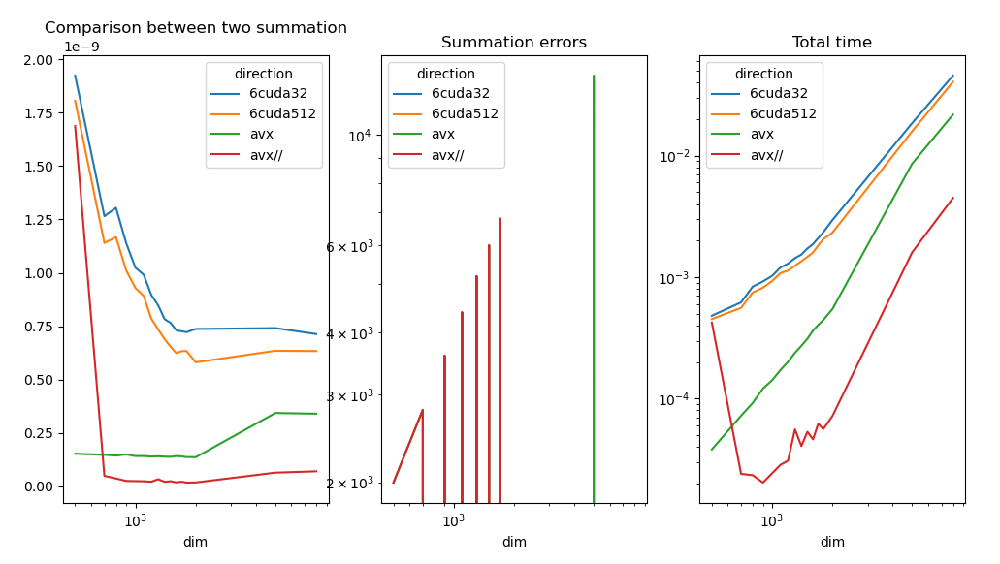

Note
Go to the end to download the full example code
Measuring CPU/GPU performance with a vector sum#
The examples compares multiple versions of a vector sum, CPU, GPU.
Vector Sum#
from tqdm import tqdm
import numpy
import matplotlib.pyplot as plt
from pandas import DataFrame
from onnx_extended.ext_test_case import measure_time, unit_test_going
from onnx_extended.validation.cpu._validation import (
vector_sum_array_avx as vector_sum_avx,
vector_sum_array_avx_parallel as vector_sum_avx_parallel,
)
try:
from onnx_extended.validation.cuda.cuda_example_py import (
vector_sum0,
vector_sum6,
vector_sum_atomic,
)
except ImportError:
# CUDA is not available
vector_sum0 = None
obs = []
dims = [500, 700, 800, 900, 1000, 1100, 1200, 1300, 1400, 1500, 1600, 1700, 1800, 2000]
if unit_test_going():
dims = dims[:3]
for dim in tqdm(dims):
values = numpy.ones((dim, dim), dtype=numpy.float32).ravel()
diff = abs(vector_sum_avx(dim, values) - dim**2)
res = measure_time(lambda: vector_sum_avx(dim, values), max_time=0.5)
obs.append(
dict(
dim=dim,
size=values.size,
time=res["average"],
direction="avx",
time_per_element=res["average"] / dim**2,
diff=diff,
)
)
diff = abs(vector_sum_avx_parallel(dim, values) - dim**2)
res = measure_time(lambda: vector_sum_avx_parallel(dim, values), max_time=0.5)
obs.append(
dict(
dim=dim,
size=values.size,
time=res["average"],
direction="avx//",
time_per_element=res["average"] / dim**2,
diff=diff,
)
)
if vector_sum0 is None:
# CUDA is not available
continue
diff = abs(vector_sum0(values, 32) - dim**2)
res = measure_time(lambda: vector_sum0(values, 32), max_time=0.5)
obs.append(
dict(
dim=dim,
size=values.size,
time=res["average"],
direction="0cuda32",
time_per_element=res["average"] / dim**2,
diff=diff,
)
)
diff = abs(vector_sum_atomic(values, 32) - dim**2)
res = measure_time(lambda: vector_sum_atomic(values, 32), max_time=0.5)
obs.append(
dict(
dim=dim,
size=values.size,
time=res["average"],
direction="Acuda32",
time_per_element=res["average"] / dim**2,
diff=diff,
)
)
diff = abs(vector_sum6(values, 32) - dim**2)
res = measure_time(lambda: vector_sum6(values, 32), max_time=0.5)
obs.append(
dict(
dim=dim,
size=values.size,
time=res["average"],
direction="6cuda32",
time_per_element=res["average"] / dim**2,
diff=diff,
)
)
diff = abs(vector_sum6(values, 256) - dim**2)
res = measure_time(lambda: vector_sum6(values, 256), max_time=0.5)
obs.append(
dict(
dim=dim,
size=values.size,
time=res["average"],
direction="6cuda256",
time_per_element=res["average"] / dim**2,
diff=diff,
)
)
df = DataFrame(obs)
piv = df.pivot(index="dim", columns="direction", values="time_per_element")
print(piv)
0%| | 0/14 [00:00<?, ?it/s]
7%|7 | 1/14 [00:04<00:52, 4.01s/it]
14%|#4 | 2/14 [00:07<00:46, 3.85s/it]
21%|##1 | 3/14 [00:12<00:44, 4.09s/it]
29%|##8 | 4/14 [00:16<00:40, 4.10s/it]
36%|###5 | 5/14 [00:23<00:47, 5.31s/it]
43%|####2 | 6/14 [00:28<00:39, 4.97s/it]
50%|##### | 7/14 [00:32<00:33, 4.75s/it]
57%|#####7 | 8/14 [00:37<00:29, 4.92s/it]
64%|######4 | 9/14 [00:42<00:24, 4.93s/it]
71%|#######1 | 10/14 [00:47<00:20, 5.09s/it]
79%|#######8 | 11/14 [00:54<00:16, 5.48s/it]
86%|########5 | 12/14 [00:59<00:10, 5.32s/it]
93%|#########2| 13/14 [01:04<00:05, 5.34s/it]
100%|##########| 14/14 [01:10<00:00, 5.42s/it]
100%|##########| 14/14 [01:10<00:00, 5.02s/it]
direction 0cuda32 6cuda256 6cuda32 Acuda32 avx avx//
dim
500 2.325284e-08 1.901990e-08 2.119154e-08 2.006574e-07 1.795974e-10 6.093829e-11
700 1.506294e-08 1.354000e-08 1.260121e-08 1.925045e-07 2.059247e-10 5.346898e-09
800 1.752986e-08 1.569897e-08 1.519789e-08 1.920090e-07 1.938645e-10 5.865896e-11
900 1.694976e-08 1.349448e-08 1.566346e-08 1.884731e-07 1.748720e-10 4.962059e-11
1000 1.213902e-08 9.473928e-09 1.171880e-08 1.890631e-07 3.009542e-10 1.153058e-09
1100 1.312926e-08 1.137941e-08 1.244052e-08 1.878155e-07 2.842737e-10 1.908693e-10
1200 1.228175e-08 1.062684e-08 1.248973e-08 1.871327e-07 3.128454e-10 5.084841e-11
1300 1.207485e-08 8.339324e-09 1.179754e-08 1.868020e-07 6.601304e-10 1.169393e-10
1400 1.154509e-08 8.412975e-09 1.005147e-08 1.864340e-07 3.389926e-10 9.182308e-11
1500 1.124453e-08 9.052099e-09 1.042931e-08 1.861366e-07 3.941778e-10 1.340853e-10
1600 1.102371e-08 7.936116e-09 1.026876e-08 1.860774e-07 3.847804e-10 3.651771e-10
1700 1.074813e-08 9.033030e-09 1.035192e-08 1.858330e-07 5.362961e-10 3.837802e-10
1800 1.099458e-08 8.780338e-09 1.007609e-08 1.853860e-07 8.028401e-10 3.116419e-10
2000 1.021367e-08 7.815330e-09 9.503635e-09 1.852692e-07 3.699541e-10 2.152644e-10
Plots#
piv_diff = df.pivot(index="dim", columns="direction", values="diff")
piv_time = df.pivot(index="dim", columns="direction", values="time")
fig, ax = plt.subplots(1, 3, figsize=(12, 6))
piv.plot(ax=ax[0], logx=True, title="Comparison between two summation")
piv_diff.plot(ax=ax[1], logx=True, logy=True, title="Summation errors")
piv_time.plot(ax=ax[2], logx=True, logy=True, title="Total time")
fig.savefig("plot_bench_gpu_vector_sum_gpu.png")

The results should look like the following.
AVX is still faster. Lets try to understand why.
Profiling#
The profiling indicates where the program is most of the time. It shows when the GPU is waiting and when the memory is copied from from host (CPU) to device (GPU) and the other way around. There are the two steps we need to reduce or avoid to make use of the GPU.
Profiling with nsight-compute:
nsys profile --trace=cuda,cudnn,cublas,osrt,nvtx,openmp python <file>
If nsys fails to find python, the command which python should locate it. <file> can be `plot_bench_gpu_vector_sum_gpu.py for example.
Then command nsys-ui starts the Visual Interface interface of the profiling. A screen shot shows the following after loading the profiling.

Most of time is spent in copy the data from CPU memory to GPU memory. In our case, GPU is not really useful because just copying the data from CPU to GPU takes more time than processing it with CPU and AVX instructions.
GPU is useful for deep learning because many operations can be chained and the data stays on GPU memory until the very end. When multiple tools are involved, torch, numpy, onnxruntime, the DLPack avoids copying the data when switching.
The copy of a big tensor can happens by block. The computation may start before the data is fully copied.
Total running time of the script: ( 1 minutes 12.216 seconds)